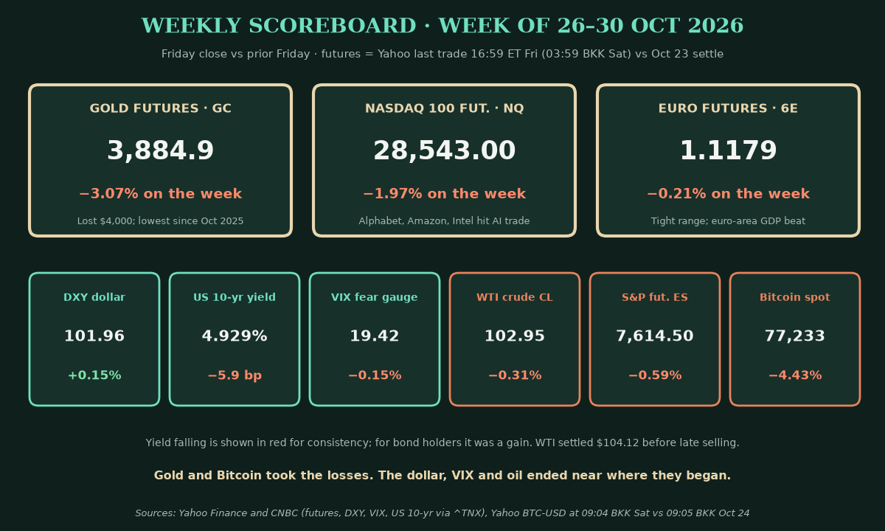
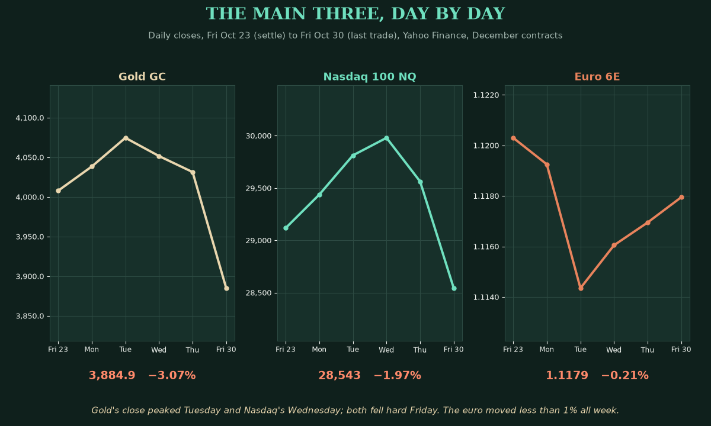
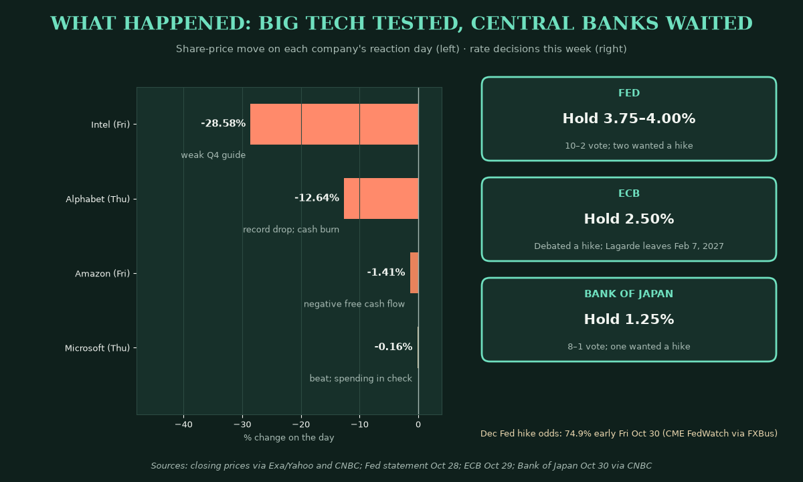
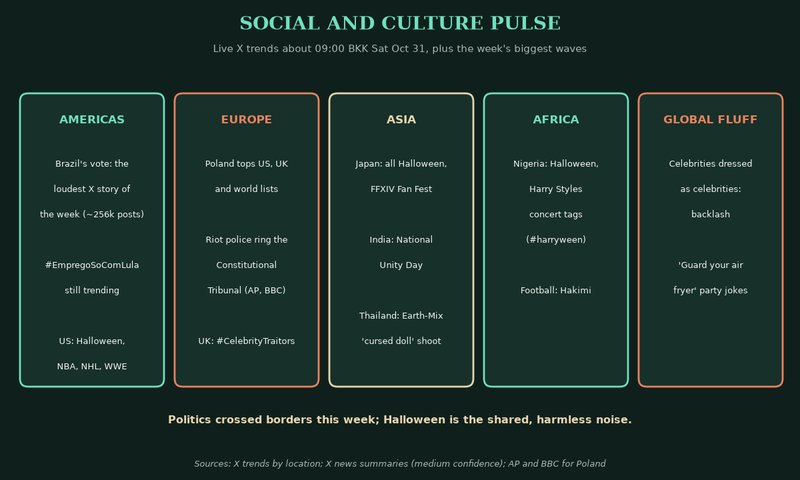
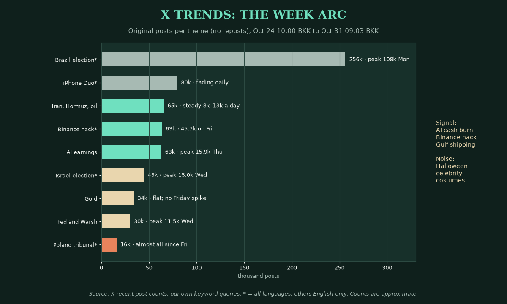
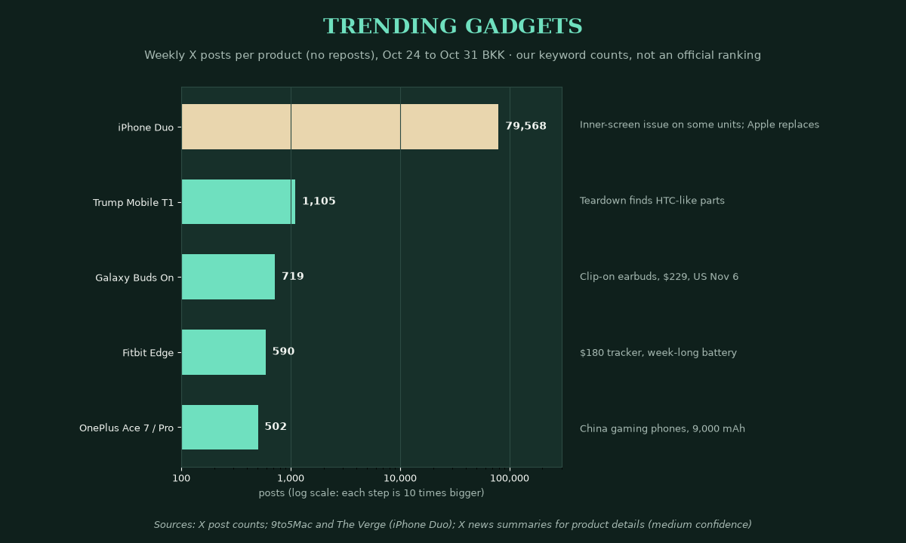
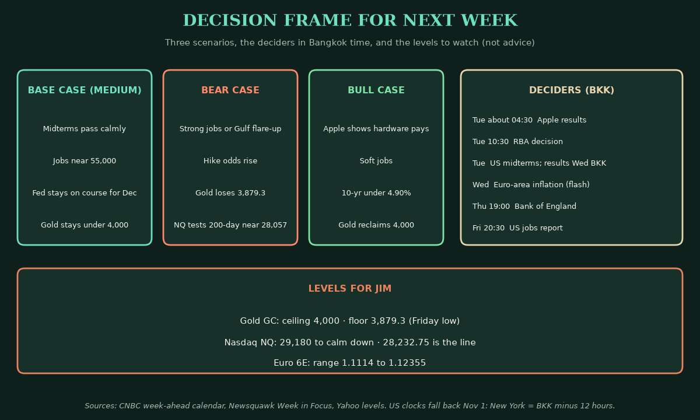

Saturday Weekly Markets Wrap · Sat Oct 31, 2026 (BKK)
April · Weekly Markets Wrap · 2026-10-31
Week of Mon Oct 26 to Fri Oct 30. Futures are Yahoo's last trade at 16:59 ET Friday, which is 03:59 Saturday Bangkok time (BKK), against the prior Friday's settle, unless noted.
Headline: gold lost $4,000 and AI lost the benefit of the doubt. Gold futures fell 3.07% to 3,884.9. Nasdaq 100 futures fell 1.97% to 28,543.00, after Alphabet's worst day on record.
So what? The Fed held rates but kept a December hike in play. Big Tech showed it is spending more cash than it makes. Bonds rallied and yields fell, yet gold still dropped. Rate-hike fear and forced selling beat the usual safe-haven bid.

1) The main three
The takeaway: gold broke, Nasdaq round-tripped from 30,000, and the euro barely moved.

- Gold futures (GC, Dec): 3,884.9, −3.07% on the week, at 03:59 BKK Saturday (Yahoo, CNBC). Driver: oil and firm US inflation data kept a December Fed hike likely, and gold pays no interest (CNBC/Reuters).
- Friday alone was −3.63%. The December contract settled at 3,898.90, its lowest settle since Oct 2, 2025, and about 27% below January's record close (CNBC; BORSA; Yahoo).
- Nasdaq 100 futures (NQ, Dec): 28,543.00, −1.97%, at 03:59 BKK (Yahoo). Driver: Alphabet, Amazon and Intel revived doubts that AI spending pays (CNBC, AP).
- NQ touched 30,178.00 on Wednesday, then fell 3.45% on Friday. The 200-day average (a long-run trend line) is about 28,057 (Yahoo closes).
- Euro futures (6E, Dec): 1.1179, −0.21%, at 03:59 BKK (Yahoo). Driver: French bond worries early in the week, then a firmer euro after growth beat forecasts.
- Euro-area GDP grew 0.4% in the third quarter, above forecasts; France shrank (Eurostat, CNBC).
Context. The dollar index (DXY, the dollar against six major currencies) was 101.96, +0.15% (ICE via Yahoo and CNBC). The US 10-year yield, what Washington pays to borrow for ten years, ended at 4.929%, down 5.9 basis points (Yahoo; CNBC shows 4.933%; a basis point is 0.01 percentage point). The VIX, a "fear gauge" built from S&P 500 options, was 19.42, −0.15%, but jumped 12.9% on Friday (Cboe via Yahoo). US crude (CL, Dec) traded at $102.95, −0.31% late Friday (Yahoo, CNBC), after settling at $104.12, its highest settle since late April (Reuters). S&P 500 futures (ES) were 7,614.50, −0.59% at 03:59 BKK Saturday (Yahoo, CNBC). Bitcoin was $77,233, −4.43% at 09:04 BKK Saturday (Yahoo).
2) What happened
The takeaway: central banks waited, Big Tech disappointed, and the Gulf kept oil high.

- The Fed held at 3.75–4.00%, by 10 votes to 2. Governor Lisa Cook and Cleveland's Beth Hammack wanted a hike (Fed statement). Chair Kevin Warsh gave no December signal and said he does not favor "forward guidance," the practice of pre-announcing moves (CNBC).
- Odds of a December rate hike (not a cut) were 74.9% early Friday, Oct 30, and other Friday readings ran near 80% (CME FedWatch via FXBus and BlockBeats; medium).
- The data were firm. Q3 growth was 3.4% at an annual pace, versus 3.2% expected. September PCE inflation, the Fed's preferred gauge, was 3.6% a year (BEA via Newsquawk). Wage costs rose 0.8% in the quarter, as expected (BLS).
- Elsewhere. The ECB held at 2.50% but debated a hike; Lagarde leaves on Feb 7, 2027 (ECB). The Bank of Japan held at 1.25% (CNBC).
- Big Tech. Alphabet fell 12.6% on Thursday, its worst day on record. Its free cash flow (cash left after spending) was −$9.07B (Alphabet filing, CNBC). Intel fell 28.6% Friday on weak guidance (Intel, CNBC).
- Brazil. Lula won Sunday's runoff. The Ibovespa fell 13.9% and tripped a circuit breaker, a forced trading pause (Reuters, Valor).
- Israel. Final count: Netanyahu's bloc 53, Eisenkot's bloc 48, Arab-led parties a record 19. Nobody has the 61 needed (Times of Israel, AP).
- Gulf. A tanker was hit by limpet mines in the Strait of Hormuz on Thursday; UKMTO reported it Friday (UKMTO via Reuters). Qatari mediators returned to Tehran (Reuters).
- Crypto. Binance lost about $6.3B in the largest crypto heist on record. About $3B is frozen, and Binance says it will cover losses (Binance, CNBC).
- Scoreboard. S&P 500 7,580.07 (−0.57%). Nasdaq Composite 25,437.00 (−2.00%). Dow 51,770.31 (−0.85%). Russell 2000 small caps +1.29% (Yahoo, AP).
Mentor beat: the S&P 500 is still only about 3.1% below its record (AP). This is a tech wobble, not a crash. Most sectors rose on the week (CNBC).
3) Social and culture pulse
The takeaway: elections ran the week online; Halloween ran the weekend.

- Americas. Brazil's vote was the loudest story on X all week. Saturday's Brazil list still carries #EmpregoSoComLula, a pro-Lula jobs tag.
- Europe. Poland jumped to the top of the US, UK and worldwide lists. Riot police ringed the Constitutional Tribunal after its president was suspended (AP, BBC).
- Asia. Japan's list is all Halloween. India marks National Unity Day. In Thailand, actors Earth and Mix's "cursed doll" Halloween shoot went viral (X news; medium).
- Africa. Nigeria's list mixes Halloween with Harry Styles concert tags, #harryween among them.
- Global memes. Celebrities dressing as other celebrities drew backlash, and "guard your air fryer" party jokes spread (X news; medium). Pure fluff.
4) X trends: the week arc
The takeaway: Brazil was the loudest story, but the Binance hack and AI earnings were the market signals.

- Brazil's election: about 256k posts, peaking at 108k on Monday as markets crashed.
- Iran, Hormuz and oil: about 65k, steady every day.
- Binance hack: about 63k, from under 300 a day to 45.7k on Friday.
- AI earnings: about 63k, peaking at 15.9k on Thursday with Alphabet.
- Gold: about 34k, flat all week. Chatter did not spike on Friday's crash. That points to big-fund selling, not retail panic (my read).
- Signal: AI cash burn, the Binance hack, Gulf shipping. Noise: Halloween, wrestling, celebrity costumes.
5) Trending gadgets
The takeaway: Apple's foldable still owned the conversation, even as it cracked.

- iPhone Duo: about 80k posts. Apple acknowledged an inner-screen issue on "a small number" of units and offers replacements (9to5Mac, The Verge).
- Trump Mobile T1: about 1.1k. A JerryRigEverything teardown found parts close to an HTC phone (X news; medium).
- Samsung Galaxy Buds On: about 720. Clip-on earbuds, $229, US launch Nov 6 (X news; medium).
- Fitbit Edge: about 590. A $180 screen tracker with a week of battery (X news; medium).
6) Decision frames for traders and investors
The takeaway: next week brings the midterms, Apple and the jobs report. Respect the range until they land.

- Base case (medium): the midterms pass without a shock. Jobs land near the 55,000 consensus. The Fed stays on course for December. Gold stays under 4,000.
- Bear case: strong jobs or a Gulf flare-up push hike odds up. Gold loses 3,879.3. NQ tests its 200-day near 28,057.
- Bull case: Apple shows AI-era hardware still pays. Soft jobs pull the 10-year under 4.90%. Gold reclaims 4,000.
- Deciders (BKK): Apple results about 04:30 Tuesday. RBA 10:30 Tuesday. US midterms Tuesday; results flow Wednesday BKK. Euro-area inflation Wednesday. BoE 19:00 Thursday, a hike expected. US jobs report 20:30 Friday (CNBC, Newsquawk).
- For Jim: gold has 4,000 as a ceiling and 3,879.3 as the floor. NQ needs 29,180 to calm down; 28,232.75 is the line. The euro sits between 1.1114 and 1.12355.
7) Our own misses this week
- Thu Oct 29, pre-London brief: skipped. No brief was published, and Jim's London sheet (14:14 BKK) went out without its cross-check.
- Fri Oct 30, pre-NY brief: late and shorter (S2). The run started at 18:21 BKK, so a shorter edition went live at 18:27 BKK, five minutes after Jim's NY sheet had gone out.
- The fix: a new troubleshooting framework adds checkpoints, retries and a short-brief fallback, starting with April and Jim.
Interpretive aside: Halloween, the night of masks. This week the market pulled off two: gold's "safe haven" and Big Tech's "free cash." Symbol, not signal.
Confidence: futures, indices and yields are high (Yahoo, CNBC, AP, Reuters settles). Fed, ECB, BoJ, BLS and Eurostat items are from official releases. Fed odds are medium: CME's own page could not be checked directly, so dated reports are used. X news summaries are medium. X counts are our own keyword queries.